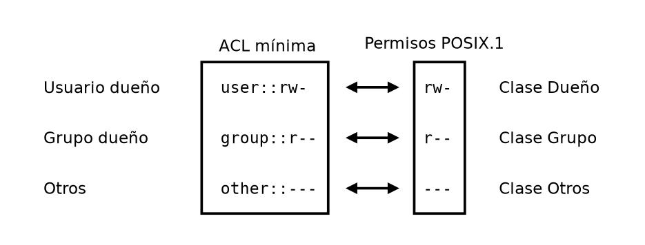
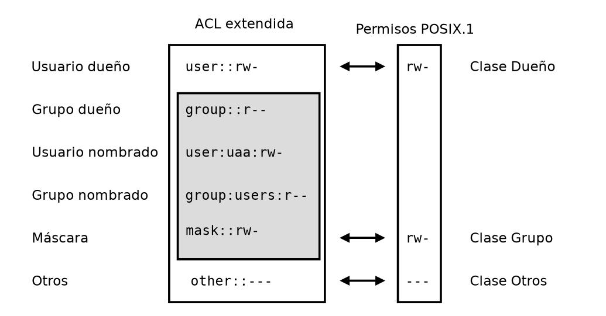

Ya hemos visto que, para acceder a la información almacenada en un sistema informático en primer lugar hay que superar las barreras físicas de acceso. Una vez superadas estas barreras, el siguiente paso en materia de seguridad será establecer unas barreras lógicas que impidan el acceso a nuestros datos.
La primera barrera lógica que se puede establecer es la creación de mecanismos de control de acceso a la información. Para ello, en vez de que al encender los equipos se pueda acceder directamente a todos los datos almacenados en los mismos, una primera medida sería la creación de usuarios para organizar la información, de forma que cada usuario únicamente pudiera acceder a la información de la cuenta para la que dispone de autorización.
Las cuentas de usuario permiten asignar a cada uno de ellos unos derechos y privilegios que restringirán las operaciones que este va a poder realizar dentro de un sistema informático, así como la posibilidad de rastrear
dichas operaciones. Como sistema de verificación de la identidad de cada uno de los usuarios se suele establecer la combinación entre un nombre identificativo (usuario, user, etc.), con la de una contraseña o password.
Además, los equipos tienen instaladas distintas aplicaciones, respecto de las que se puede establecer un control de usuarios integrado con el del sistema operativo o independiente del mismo. En este caso, el acceso a las aplicaciones se realizará mediante un usuario y contraseña, que se verificarán en el sistema de autenticación de la aplicación.
Si se trabaja en un entorno de red, es posible que, para acceder a algún recurso de la misma, se exijan unas credenciales determinadas, establecidas a través de las listas de control de acceso (ACL, Access Control List). Además, en las redes, los dispositivos de red, como los routers, pueden servir de barrera lógica impidiendo el acceso a determinadas zonas de la red para algunos usuarios (asignándoles
un rango restrictivo de direcciones IP).
Las ACL de Windows se pueden configurar con icacls o con el Explorador de archivos de Windows. También puede usar el comando Set-ACL de PowerShell.
ACLs en AD
Si el cliente está unido a un dominio o si el entorno tiene varios bosques de AD, no use el Explorador de Windows para configurar las ACL. En su lugar, use icacls. Esto se debe a que la configuración de ACL de Explorador de archivos de Windows requiere que el cliente esté unido al dominio de AD al que está unida la cuenta de almacenamiento.
Siga estos pasos para configurar las ACL mediante el Explorador de archivos de Windows.
Los permisos se aplican sobre elementos del sistema de archivos, tales como archivos regulares, directorios, sockets Unix, enlaces simbólicos, nodos de dispositivos, etc. Los tipos de permisos que puede administrar GNU/Linux, o permisos POSIX, son tres (aunque también existen los permisos especiales y los atributos):
(r: Read): la entidad asociada podrá leer el elemento.(w: Write): la entidad asociada podrá escribir o modificar el elemento.(x: eXecution): la entidad asociada podrá ejecutar el elemento.Las entidades sobre las que tienen vigencia estos permisos son:
(u: User): usuario dueño del elemento en el sistema de archivos.(g: Group): grupo al que pertenece el elemento.(o: Others): el resto de los usuarios del sistema que no son ni el dueño del elemento, ni pertenecen al grupo del elemento.Los permisos se pueden visualizar con el comando ls -l y se pueden modificar con el comando chmod. Por ejemplo, para dar permisos de lectura, escritura y ejecución al propietario del archivo, de lectura y ejecución al grupo y de lectura y ejecución a otros usuarios, se utilizaría cualquiera de estos comandos:
# chmod 755 archivo
# chmod u=rwx,g=rx,o=rx archivo
# ls -l /root
drwxr-x--- 35 root root 4096 Jun 7 20:45 root
Las líneas de esta salida tienen una estructura particular. De esta salida ahora nos interesa la primer columna, compuesta de 10 letras. En la primer columna, las letras que identifican los permisos de cada elemento. La primer letra de esta columna indica el tipo de elemento (d - directory), y luego sí tenemos 9 letras que identifican los permisos de lectura, escritura y ejecución en tres ternas: propietario, grupo, y los otros usuarios del sistema.
En el caso de los directorios, los permisos de lectura y escritura permiten listar el contenido del directorio y crear o eliminar archivos y directorios en él, respectivamente. El permiso de ejecución permite acceder al contenido del directorio.
En el caso de los archivos, los permisos de lectura permiten leer el contenido del archivo, los de escritura permiten modificar el contenido del archivo y los de ejecución permiten ejecutar el archivo si es un script o un programa.
Permisos especiales en Linux
Además de los permisos básicos, existen permisos especiales que se pueden aplicar a los archivos y directorios en Linux. Algunos de los permisos especiales más comunes son los siguientes:
Aunque los permisos de los archivos y directorios en Linux son muy potentes y permiten controlar el acceso a los archivos y directorios de forma muy precisa, tienen algunas limitaciones. Algunas de las limitaciones más comunes de los permisos de los archivos y directorios en Linux son las siguientes:
En el ejemplo anterior, si queremos que un usuario tenga permisos de escritura sobre el directorio, podemos tomar varias alternativas:
Esto haría que el usuario root perdiese los permisos de escritura sobre el directorio.Esto haría que todos los usuarios del grupo root también tuviesen permisos de escritura sobre el directorio.Esto haría que todos los usuarios del sistema tuviesen permisos de escritura sobre el directorio.Esto haría que los usuarios del grupo root perdiesen el acceso al directorio.La solución parece no ser sencilla. Lo mismo ocurriría si quisiéramos, por ejemplo, dar permisos de escritura a los usuarios de un grupo diferente a root, ya que no es el grupo al que pertenece el archivo, y nos ocasionaría problemas similares.
Aquí es donde entran en juego las listas de control de acceso, o ACL (Access Control List), en la administración de privilegios en GNU/Linux.
Las listas de control de acceso (ACL) son un mecanismo de control de acceso que permite a los administradores de sistemas establecer permisos más detallados y granulares en los archivos y directorios de un sistema Linux. Las ACL permiten a los administradores de sistemas establecer permisos de acceso a nivel de usuario y grupo, lo que les permite controlar con precisión quién puede acceder a qué archivos y directorios en un sistema Linux.
ACLs y permisos POSIX
Las ACL son representaciones de permisos para elementos del sistema de archivos, que extienden los permisos nativos POSIX.1 del sistema.
De hecho, los permisos nativos también tienen su representación en ACL cuando éstas están activadas, es decir, los permisos nativos son representados por ACL’s, y además, podemos agregar ACL’s adicionales para otorgar permisos más granularizados a otras entidades del sistema de archivos.
| Tipo de entrada | Etiqueta de permisos | Forma en texto |
|---|---|---|
| Owner (dueño) * | ACL_USER_OBJ | user::rwx ó u::rwx |
| Named user (usuario nombrado) | ACL_USER | user:name:rwx ó u:name:rwx |
| Owning group (grupo dueño) * | ACL_GROUP_OBJ | group::rwx ó g::rwx |
| Named group (grupo nombrado) | ACL_GROUP | group:name:rwx ó g:name:rwx |
| Mask (máscara) | ACL_MASK | mask::rwx ó m::rwx |
| Others (otros) * | ACL_OTHER | other::rwx ó o::rwx |
Básicamente las ACL se conforman por un tipo (user, group, mask, other), una serie de calificadores (qué usuario, qué grupo, o ninguno), y los permisos en formato POSIX.1 estándar (mode).
ACLs vs permisos
Cuando se activan las ACL en un sistema de archivos, pasan a utilizarse como mecanismo predeterminado de gestión de permisos.
Las ternas de permisos nativos POSIX mapean directamente a ACL’s, lo que da la posibilidad de gestionar estos permisos mediante ACL’s.
Las ACL equivalentes a los permisos nativos de POSIX se las denomina ACL’s mínimas, y están marcadas con un (*) en la tabla anterior, y son tres.

Cuando hablamos de las ACL mínimas (sin máscara), los permisos de las clases dueño, grupo y otros coinciden con los permisos nativos de usuario dueño, grupo y otros que vemos en la salida de comandos como ls -l.
Para poder utilizar las listas de control de acceso en los sistemas de archivos en Linux se requieren tres cosas:
Para verificar si las ACL están soportadas por nuestro kernel tenemos dos formas. Si existe el archivo de configuración que se utilizó para compilar el núcleo en nuestra distribución, en general se encontrará dentro de /boot, y su nombre será config-<version del núcleo Linux activo>. En definitiva podríamos utilizar el siguiente comando para verificarlo:
grep ACL /boot/config-$(uname -r)
Para comprobar si el sistema de archivos tiene activada la opción acl, podemos utilizar el comando tune2fs para comprobar si la opción acl está activada en el sistema de archivos. Por ejemplo, para comprobar si la opción acl está activada en el sistema de archivos /dev/sda1, podemos utilizar el siguiente comando:
tune2fs -l /dev/sda1 | grep "Default mount options"
Por último, para instalar las utilidades para gestionar las ACL’s en Linux, podemos instalar el paquete acl y opcionalmente el paquete e2fsprogs. En Debian y derivados, como Ubuntu, podemos instalar el paquete acl con el siguiente comando:
sudo apt install acl
sudo apt install e2fsprogs
El paquete acl, incluye varias herramientas (setfacl, getfacl, chacl) que nos van a permitir gestionar las ACLs.
El comando getfacl nos permite ver las ACL de un archivo o directorio. Por ejemplo, para ver las ACL de un directorio, podemos utilizar el siguiente comando:
getfacl /ruta/directorio
# file: /ruta/directorio
# owner: root
# group: root
user::rwx
group::r-x
other::r-x
El comando setfacl permite crear o modificar una ACLs sobre un archivo o directorio, mediante el modificador -m o --modify de esta manera:
setfacl -m u:uaa:rw- archivo.txt
El dueño del archivo (o el usuario root) podrán fijar estos permisos. Ahora la ACL ha cambiado y se verá de la siguiente forma. Se aprecia también una entrada para la máscara, o mask.
getfacl archivo.txt
# file: archivo.txt
# owner: root
# group: root
user::rw-
user:uaa:rw-
group::r--
mask::rw-
other::r--
La sintaxis de setfacl especifica los permisos para usuarios o grupos utilizando la siguiente nomenclatura:
u:named_user:permission
g:named_group:permission
Y se pueden otorgar varios permisos en la misma línea separando los mismos por coma, por ejemplo:
setfacl -m u:usuario1:rw-,u:usuario2:r--,g:grupo1:r-- archivo.txt
Para eliminar una ACL creada por error podemos utilizar el modificador -x o --remove. Por ejemplo, si la ACL creada para el usuario uaa fue creada por error, podemos eliminarla con el siguiente comando:
setfacl -x u:uaa archivo.txt
Dicho sea de paso, podemos eliminar todas las ACL’s creadas para un archivo o directorio utilizando el modificador -b (o --remove-all) de esta forma:
setfacl -b archivo.txt
La máscara en las ACLs es un permiso especial que se utiliza para limitar los permisos que se pueden asignar a los usuarios y grupos en un archivo o directorio. La máscara en las ACLs se representa con la etiqueta mask:: en la salida del comando getfacl.

A partir de usar ACLs, la salida de ls -l se verá modificada, y se añadirá un signo + al final de la salida, indicando que el archivo o directorio tiene ACLs extendidas. Para ver las ACLs extendidas de un archivo o directorio, se puede utilizar el comando getfacl.
ls -l archivo.txt
-rw-rw-r--+ 1 root root 0 Jun 7 20:45 archivo.txt
El valor que vemos ahora para el grupo es el correspondiente al permiso máximo de la clase grupo que vemos en la imagen superior, y que está representado por el valor de la máscara.